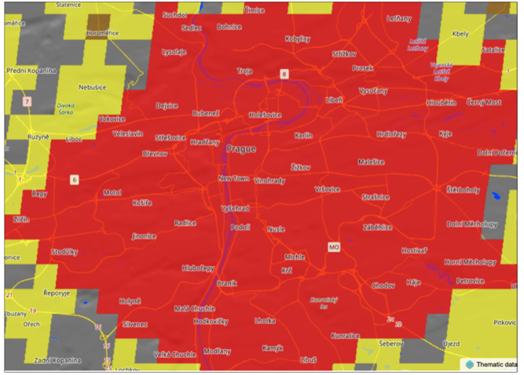

EuroFab
European Urban Fabric Classification Using Artificial Intelligence
Project introduction
structure of human settlements
temporal dimension
Why urban fabric
Cities take up around 3% of the planet’s land but are home to more than half of humanity and responsible for 75% of carbon emissions1.
Why urban fabric
Urban fabric, the spatial layout of the physical elements that make up a city, mediates most activities their residents undertake, from heating their homes to accessing services, jobs and opportunities through sustainable modes of transport.
Why urban fabric
Easily available, comparable, and dynamic information on urban fabric would unlock new ways of understanding how cities are constantly evolving, what it means for their sustainability, and how effective policies can be designed to steer development in desirable directions.
Why now
In 2023, UN Habitat included urban fabric as one of the key ingredients required for effective sustainable design1
Why now
There are currently very few instances of detailed, consistent, and scalable measurements of urban fabric and virtually none of them provide insight into its change over time.
EuroFab vision
EuroFab paves the road for a world where stakeholders, from local authorities to supranational organisations, are able to track and monitor the pattern of urban development in detail directly relevant for planning and at scale.
we’re not there yet
Objectives
High-level objectives
Strengthen Czech and British national capabilities to exploit cutting-edge AI methods to integrate EO data and high-performance computing.
Expand the integration and uptake of EO-derived information.
Technical objectives
- Specify, develop, and validate innovative methods integrating raster (satellite) and vector data in rich and explainable characterisations of urban fabric.
Technical objectives
- Test the comparative performance of transformer-based (foundation) vision models against the baseline of convolution-based neural networks.
Technical objectives
- Evaluate the selected vision models on two European regions.
Technical objectives
- Develop open-source software, algorithms and open datasets that ensure the sustainability and usability of the project outputs beyond the initial funding period.
Technical objectives
- Create the roadmap for a large-scale inference chain (i.e. covering all of Europe or parts of the globe) for the capability being developed.
State of the Art
Classifications of urban form fall, broadly, into two categories.
- rich, detailed, and hyper-local classifications
- simpler, coarser, large-scale classifications
The hyper-local approaches still dominate the field,
severely restricting any large-scale analysis and
even the comparability of local classifications.

The large-scale approaches tend to be coarse in
both spatial resolution and classification detail.
Hyper-local meets scalable
While originating from the primarily qualitative methods, urban morphology has entered the era of data science with the development of urban morphometrics.
Proposed approach
Urban morphometrics + computer vision.
A balance between generalisation and detail.
More granularity than existing large-scale classifications.
Scalability to much larger regions than traditional hyper-local classifications
Morphometrics
Morphometric characterisation of urban fabric complements and substantially extends the information provided by existing data products that aim to provide similar intelligence on urban fabric.
Morphometrics
Provides a rich typology of settlement patterns.
Understands what type of development1 is present.
Uncovers the internal structure of cities linked to the period of development, planning paradigm and cultural evolution.
Core component
Develop a protocol, tools, and predictive models for homogenisation of morphometric classification.
Computer vision
Satellite imagery (Sentinel 2 mission) to predict morphometric classification allowing identification of its temporal dimension.
Application of state-of-the-art AI modelling to overcome the limitations of Sentinel 2 resolution in urban settings.
Core component
Develop a predictive model and a space-time dataset of urban fabric in Great Britain.
Stakeholder consultation and
co-production
Sustain a consultation process running along all the phases of the project, from its inception to the last dissemination steps.
What
Ensure and maximise the policy relevance, usability and further applications of the outputs of the project.
International comparability of the data products and their derived indicators.
Comparison of the outputs of the project with other already existing classifications endorsed by international organisations and applied by National Statistical Offices (e.g. the classification of human settlements DEGURBA).
How
OECD Geospatial Lab and OECD technical expertise
“Producer” stakeholders, mainly belonging to the scientific community (working on the production of data flows and data products close or relevant to the expected deliverable of EuroFab).
“User” stakeholders, wide range of potential user of the data produced by EuroFab, interested in applying it for the definition of policy-relevant indicators and characterised by various degrees of technical competencies.
Input datasets
- Optical satellite imagery from Sentinel 2
- Building Footprints and Linear Features1
- Available Urban Fabric Classification of Great Britain2
Envisaged system
Work plan and deliverables
Six Work Packages
- WP000 Project Management and Communication
- WP100 Collaborative Stakeholder Requirements Consolidation
- WP200 Iterative Algorithm Design and Data Collection Sprints
- WP300 Incremental Development and Processing Algorithm Implementation
- WP400 Verification of Novel Processing Capability in Representative Use Case and Results Dissemination
- WP500 Large-scale Inference and Operationalization Strategy Elaboration
WP000 Project Management and Communication
Organisation, monitoring, and supervision of all project operations, such as evaluations, meetings, reporting, quality assurance, and risk assessment.
Outputs
- MoM: Minutes of Meetings
- MA: Meeting Agendas
- MPR: Monthly Progress Reports
- FR: Final Report
- ES: Executive Summary
- CCD: Contract Closure Document
WP100 Collaborative Stakeholder Requirements Consolidation
WP101 Stakeholder mapping and context definition
WP102 Stakeholder requirements specification
WP103 Expert consultation
Outputs
- D1: Technical note: Consolidated Stakeholder Requirements Specification
WP200 Iterative Algorithm Design and Data Collection Sprints
WP201 Morphometric Classification Homogenisation Protocol Design
WP202 AI Model Design
WP203 Input Data Collection and Preprocessing
Outputs
- D2 Technical Note: Algorithm Design and Theoretical Basis Description
- D3 Technical Note: Reference Data Selection
WP300 Incremental Development and Processing Algorithm Implementation
WP301 Morphometric Classification Homogenisation Protocol Development
WP302 AI Model Development and Training
Outputs
- S1 Software: AI Method for Urban Fabric classification and morphometric characterization
WP400 Verification of Novel Processing Capability in Representative Use Case and Results Dissemination
WP401 Morphometric Classification Verification
WP402 AI Model Inference and Verification
Outputs
- D4 Technical Note: Test and Verification Results
- D5 Stakeholder Impact and Utility Assessment
- D6 Example datasets generated during Verification Exercises
- D7 Outreach and Communication Package
WP500 Large-scale Inference and Operationalization Strategy Elaboration
WP501 European Morphometric Classification Strategy
WP502 European Space-Time Urban Fabric Strategy
WP503 Scaled up stakeholder engagement
Outputs
- D8 Technical Note: Large scale inference and Operationalisation Roadmap
Milestones and timeline
Events
- Week 2 of September 2024:
- Stakeholder Workshop I (optionally paired with URBIS24)
- Week 1 of November 2024:
- Networking event at WUF12 (Cairo, Egypt) – pending selection process
- Week 4 of January 2025:
- Stakeholder Workshop II
- Week 4 of April 2025:
- Stakeholder Workshop III
Milestones
- Progress (MS 1), KO + 6 months
- Final (MS 2), KO + 12 months